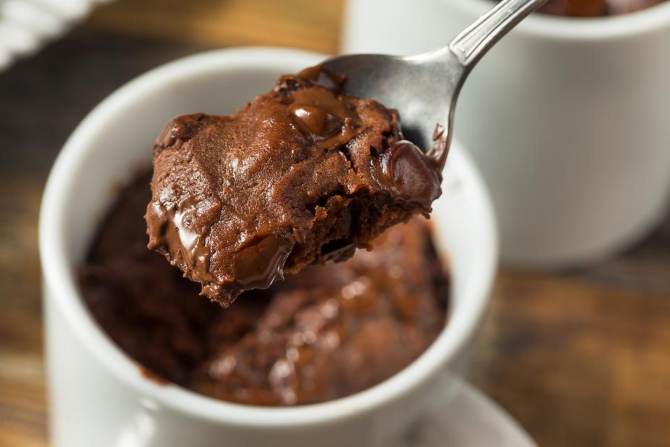

Gooey Chocolate Brownie Mug Cake Recipe

Description
If you have no discipline when a platter of brownies is around, then this easy mug brownie recipe is for
you!It's the perfect chocolate dessert for one and when you're trying to eat healthier or practice
portion control. You won't have the temptation of grabbing another brownie if you just make enough for one
This easy mug cake brownie recipe is delicious topped with vanilla ice cream or whipped cream - or nothing at all.
Takes 5 mins to prepare and 5 mins to cook and cool
Serves 1
Ingredients
- 4 tablespoons flour
- 3 tablespoons granulated sugar
- 2 tablespoons unsweetened cocoa powder
- dash of salt
- 2 tablespoons butter, melted
- 3 tablespoons milk or water
- 1/8 teaspoon vanilla
Steps
- Combine the flour, sugar, cocoa powder and salt in a mug. Mix well
- Add the butter and stir until it looks like sand.
- Add the milk and vanilla. Stir to combine.
- Microwave on high for about 1 minute. Check and continue cooking in 10-second intervals until almost set
- Let the brownie sit about 2 to 3 minutes before eating.